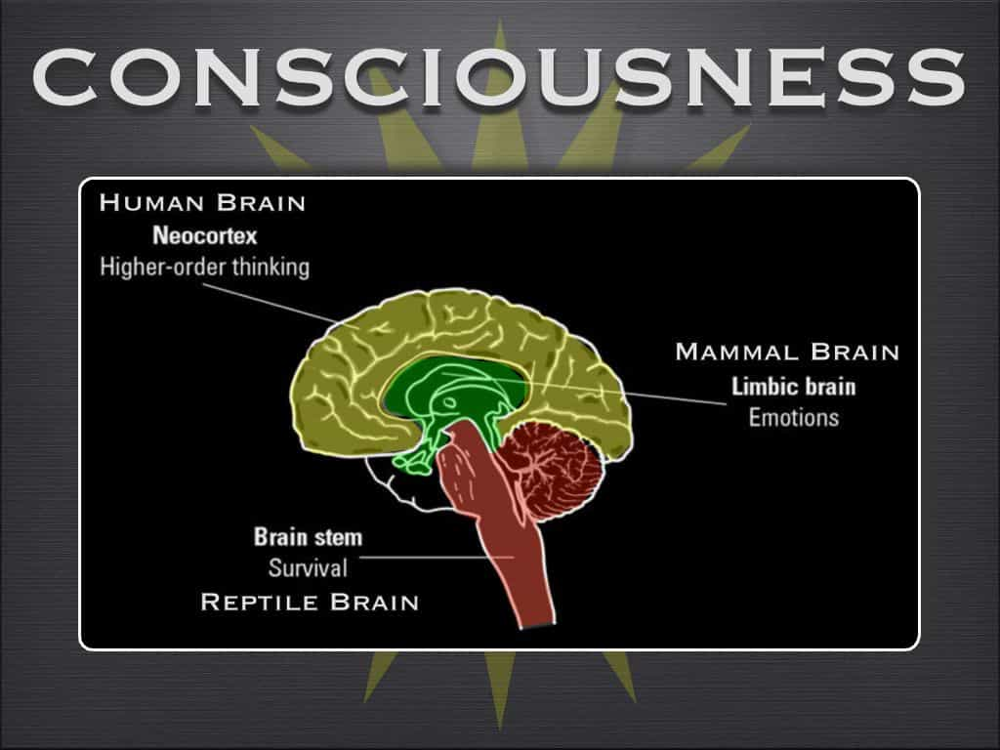

Ethan Forza is a writer in his spare time. Ethan believes that there is nothing prettier in the world than a pretty woman and nothing uglier in the world than an ugly woman.


I grew up in Philly, which set me on a track to live life fast. To survive, I learned the skill of being able to figure people out in a split second. I had to determine if the person I was interacting with wanted to knock my fucking teeth out or wanted to be my friend.
When it came to women, my guy friends in social settings would literally push me in front of a group of girls. This was so I would be the one starting the conversation and entertaining the girls. We all know girls love attention. So in a way, I was forced to learn game quickly and at a young age.
Oh, and I don’t want to forget about the street drugs. In addition to the sex, the drugs definitely increased my already rapid-pace lifestyle. The problem for me was that life was moving too quickly and had no real meaning. That all changed when I bought an old school book about meditation.

There was definitely a stigma attached to meditation with the peer group that I was hanging out with at the time. I kept it to myself when I began meditating, because anything like this was considered faggy to my friends. Meditation is a simple thing to do. There is no need to be in a dark setting or a quiet place.
Don’t complicate it, because you’ll be less likely to continue. No special breathing techniques are needed and neither are mantras. They will come naturally in time. Meditation should be something you look forward to doing. You don’t need to sit in any special way or be in any specific place, you just need to close your eyes and relax. Ambient music can really help you to clear your mind.
My favorite time to do it is when I first wake up, because I’m still in a dream state. Side note: if anyone ever tries to charge you for meditation, they are a scam artist. It’s a free practice and a personal journey.
Start by meditating for five minutes after waking up. New thoughts and ideas will start pouring into your mind. Eventually, with practice you will be able to meditate anywhere and at any time. It becomes highly enjoyable. As the saying goes, “as within, so without.” In order to have true enjoyment and fulfillment in life, your internal game needs to be tight too.

You are all you have in this life. Your appearance, finances, and socialization skills are all essential, but your internal world is even more important to get in check. Your body is just the cage for your soul or the world within. When you tap into this internal energy, you will also connect to a higher level of consciousnesses.
I was very skeptical at first, and it’s easy to believe that meditation is just some New Age bullshit. The more I meditated, the better I felt, so I realized quickly that I was on the right path. Meditation changes your perspective and will slow your life down. You will discover what is most meaningful to you. Interactions in your life will also improve. You will be living in the moment and feel more connected to others. You will gain confidence and your anxiety should decrease.
Sex becomes more of a sensual and erotic experience because you have slowed your mind down and your soul is guiding your body. Solving everyday problems becomes easier. I always go with the simple answer I get through meditation. They tend to be the right and most effective answers. Writing down these newfound answers in a notebook is beneficial. When rereading your notebook, you’ll be surprised by how many of those simple thoughts really improved your life.

Last year, I was having trouble selling my condo. During this time, my girlfriend’s father had a heart attack and died. In the past, this would have been too much for me and I would have been completely overwhelmed.
By the way, my girlfriend’s father’s death was about me because I had to be there for the drama associated with it. I didn’t become some emotional pussy for my girlfriend: that is not what a woman needs. I stayed strong because I was able to gain the correct perspective by meditating. My strength calmed her and I was able to direct her and give her the proper guidance she needed. The following month, I sold my condo after the idea of making one cheap renovation came to me through meditation.
Meditation has helped me visualize the external life I wanted. I determined what I desired from life, though what you want out of life will obviously likely be different. I now know that life never ends: all that happens is that my level of consciousness changes.
I haven’t done any hard drugs in years. My life no longer consists of quick, meaningless interactions. I now only surround myself with positive people that add value to my life. I cut out shitheads and downer-type people as soon as they reveal themselves. I truly tapped into what matters to me, and I hope through meditation, you can do the same.
Read More: 3 Keys To Meditation For A Beginner